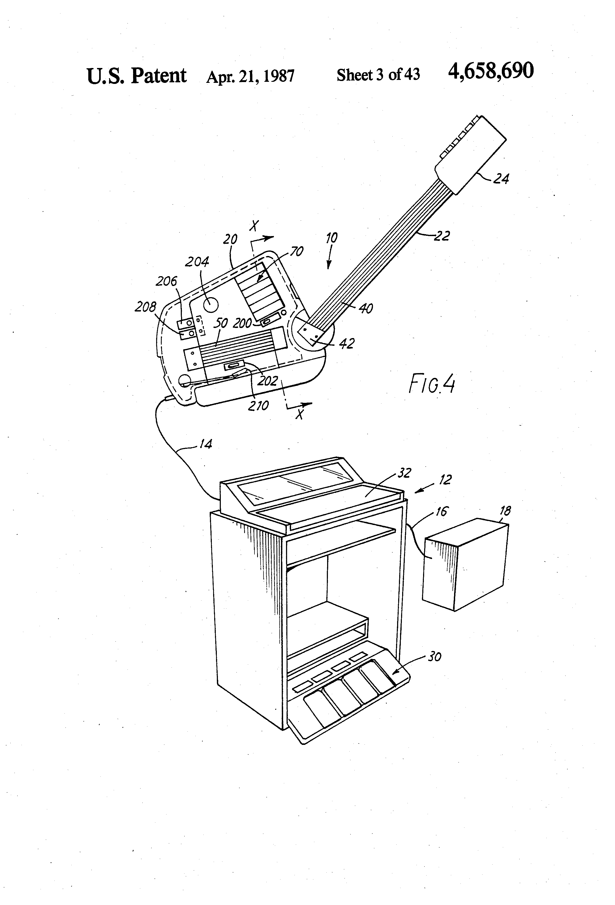
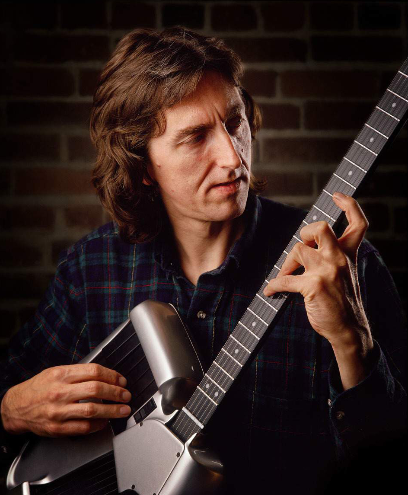

SynthAxe
The £10,000 MIDI guitar that freed pitch from pluck — crashed sequencers with six channels of aftertouch, and fewer than 100 were made

Overview
The SynthAxe was a fretted MIDI guitar controller developed in England and launched commercially in 1985–86. Funded as a joint venture by Richard Branson's Virgin Group, it was built by Synthaxe Limited and co-invented by Bill Aitken, Mike Dixon, and Tony Sedivy (US Patent 4,658,690, filed January 1985). It carried no internal sound source; it was a pure MIDI controller that required external synthesizers.
The instrument's defining innovation was the complete decoupling of pitch selection from note triggering. Six pitch strings ran over a 24-fret neck where each fret was divided into 11 conductive sections, continuously scanned by a microprocessor — pressing a string onto a fret closed an electrical switch, just like a keyboard scanning matrix. Six separate trigger strings on the body detected velocity via Hall effect sensors when plucked. The two string sets were mounted at an angle to each other, giving the instrument its distinctive sci-fi silhouette.
String bends were detected by sensor coils embedded in the fingerboard; touch was sensed by an AC waveform superimposed on a DC potential, enabling hammer-ons, pull-offs, and an auto-trigger mode. Nine velocity-sensitive trigger keys with polyphonic aftertouch offered an alternative to picking. The result was six independent MIDI channels — each with per-string pitch bend and aftertouch — capable of crashing most 1980s sequencers.
Priced at £10,000 (approximately US $13,000) in 1986, fewer than 100 units were built from aerospace and military-grade components: a cast metal chassis inside a fibreglass shell with a steel neck. Transporting one required four flight cases. Virgin dropped the product around 1987–88, and Synthaxe Limited entered liquidation. Allan Holdsworth, its most famous user, called it "the only guitar synthesizer that was ever built that really works for me."
Deep dive
Every competing MIDI guitar system of the mid-1980s — the Roland GR-series, the IVL Pitchrider — worked by analyzing audio waveforms. A string was plucked, the system sampled it, computed its pitch from the waveform, then generated a MIDI note. This took time — typically 10–30 milliseconds, perceptible to a trained musician. The SynthAxe eliminated latency entirely by refusing to do pitch analysis. Its fretboard was an electrical switch matrix: press a string to a fret, and you close a circuit. The note pitch is known instantly, before any note is triggered. The trigger strings (or keys) then initiate the MIDI event with zero computational delay. This architectural decision — decoupling pitch from trigger — was the SynthAxe's single most important HCI insight.
The SynthAxe had four distinct interaction subsystems. (1) Fretboard scanning: 24 frets, each divided into 11 conductive sections (6 under each string plus 5 inter-string pins), continuously scanned by multiplexing. Non-standard spacing allowed a two-octave range per string. All strings used the same gauge (0.13), giving uniform light action. (2) String bend detection: tiny electromagnetic sensor coils between frets detected lateral string movement by sensing changes in the field around current-carrying strings. (3) Touch sensing: an AC waveform imposed on a DC bias detected finger contact before the string reached the fret, enabling hammer-ons and pull-offs. (4) Triggering: Hall effect sensors on six trigger strings measured plucking velocity and timing; nine velocity-sensitive keys with polyphonic aftertouch provided an alternative; an auto-trigger mode fired notes on fret contact for tapping technique. A separate console/pedestal unit provided individual string tuning, transposition, electronic capo, and foot-pedal control of decay and sustain.
Richard Branson's Virgin Group funded the SynthAxe as a joint venture, handling distribution through Virgin Games. The 1986 launch price of £10,000 placed it firmly in the professional studio market. Virgin's involvement aligned the SynthAxe with the company's broader push into entertainment technology in the mid-1980s. But when the product failed to find a market beyond a handful of virtuoso guitarists, Virgin pulled out after approximately two years, and Synthaxe Limited entered liquidation. The liquidation left SynthAxe owners without factory support or spare parts — Holdsworth later lamented that "there are maybe two or three guys on the whole planet that could probably fix a SynthAxe now."
The SynthAxe's most unexpected legacy came from Future Man (Roy Wooten), percussionist for Béla Fleck and the Flecktones. Future Man bought Lee Ritenour's SynthAxe and completely rebuilt it into the Drumitar — a guitar-shaped MIDI drum controller. Where the original mapped MIDI data to synthesizers, the Drumitar mapped it to drum machines and samplers. The novel interface (two sets of strings, velocity-sensitive keys) turned out to be equally suited to percussion as to melody. The Drumitar became Future Man's signature instrument through multiple Grammys with the Flecktones, giving the SynthAxe's architecture a creative afterlife far beyond its original design intent.
Allan Holdsworth used the SynthAxe on Atavachron (1986) and Sand (1987). Lee Ritenour featured it on the cover of Earth Run (1986). Christopher Currell used it to control a Synclavier on Michael Jackson's Bad tour. Chuck Hammer worked with Lou Reed and David Bowie using the SynthAxe. Gary Moore was briefly shown playing one in the "Out in the Fields" video.
Team & pioneers
- Bill Aitken (William A. Aitken). Primary inventor; conceived the instrument in the early 1980s.
- Mike Dixon (Michael S. Dixon). Co-inventor, engineering.
- Tony Sedivy (Anthony J. Sedivy). Co-inventor, engineering.
- David Fowler. Designed key toggles; trading as BJ Hopkins Injection and Toolmaking, Littleworth, Oxford. Deceased.
- Synthaxe Limited. UK limited company, London area. Assignee of US patent. Joint venture with Virgin Group.
- Richard Branson / Virgin Group. Joint venture funder; Virgin Games handled distribution.
Media


Sources
- Wikipedia: SynthAxe
- US Patent 4,658,690: Electronic musical instrument (SynthAxe)
- John Hollis: SynthAxe serial #0006 — first-hand owner's page
- Allan Holdsworth Innerviews interview (discusses SynthAxe)
- MATRIXSYNTH: SynthAxe tag (aggregator with photos and videos)
- SynthAxe factory demo video (YouTube)
- Sound on Sound, March 1986: SynthAxe feature (archived at muzines.co.uk)